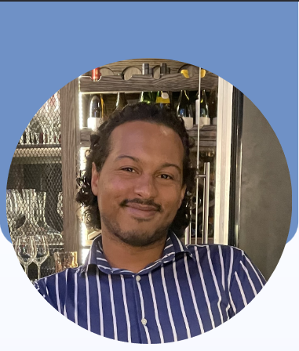

Aller vers le CV téléchargeable
Michael Zanaglia
25 ans, En recherche perpétuelle de nouveau challenge dans le monde du developpement l'informatique.
14 rue de la libération, Lebeaumarchais Bat.B
06150 Cannes la Bocca
michael.zanaglia@laplateforme.io
06.63.06.03.16
Formations
2023 - Bachelor IT Ecole La Plateforme (en cours)
2022 - CAP Pâtisserie Faculté des métiers de Cannes
2020 - Licence LLCER Japonais Université Aix-Marseille Lycée Jules Ferry
2016 - Baccalauréat Technologique SIN avec mention BIEN
 Expériences Professionnelles
Expériences Professionnelles
2018 - 2021
Equipier Polyvalent
Subway (Mandelieu-la-Napoule)
En charge de l'ouverture et de la fermeture du restaurant, gestion de caisse, acceuillir et servir les clients.
2021 - 2022
Apprenti Pâtissier
Bono (Antibes)
Chargé de fabrication et de production et aides à la productions de commandes. Entretient du laboratoire en adequations aux normes d'hygienes.
2022-2023
Aide Pâtissière
Cacahouète Paris (Tokyo)
Aide de fabrication et de production selon les standards japonais au sein d'une équipe franco-japonaise.
 Langues
Langues
Francais : Langues Maternelles
Anglais : Niveau B2
Japonais : Niveau N4 / N3
 Compétences
Compétences
 Base en Python
Base en Python
 Installation de VM sous Linux
Installation de VM sous Linux
 Connaissance en Basch
Connaissance en Basch
 HTML
HTML
 Travail en équipe & Communication Interculturelle
Travail en équipe & Communication Interculturelle
 Proactif
Proactif